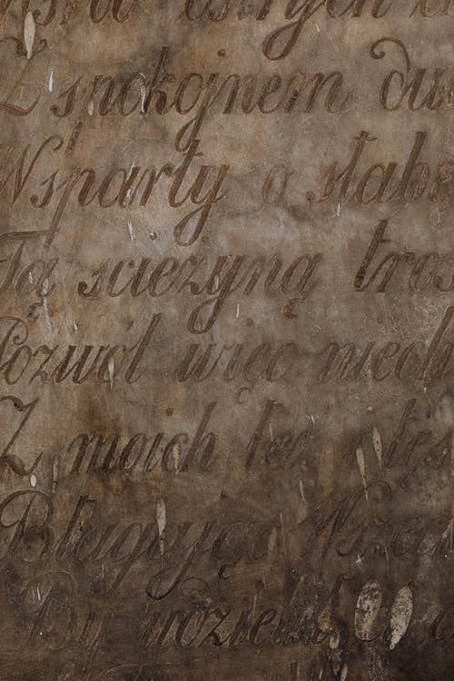
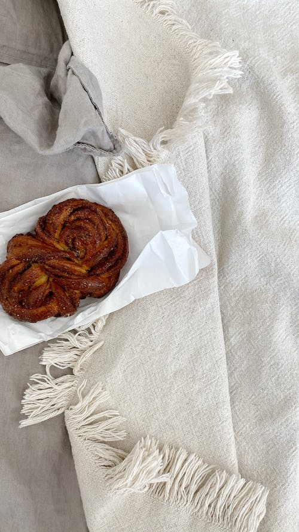
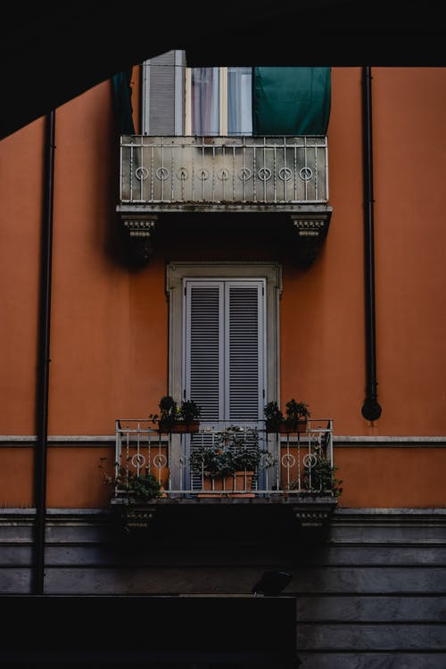

Hello
-
Thousands
Thousands of good, calm, bourgeois faces thronged the windows, the doors, the dormer windows, the roofs, gazing at the palace, gazing at the populace, and asking nothing more; for many Parisians content themselves with the spectacle of the spectators, and a wall behind which something is going on becomes at once, for us, a very curious thing indeed.
read more -

If it could
If it could be granted to us, the men of 1830, to mingle in thought with those Parisians of the fifteenth century, and to enter with them, jostled, elbowed, pulled about, into that immense hall of the palace, which was so cramped on that sixth of January, 1482, \the spectacle would not be devoid of either interest or charm, and we should have about us only things that were so old that they would seem new.
read more -

With the reader’s
With the With the reader’, we will endeavor to retrace in thought, the impression which he would have experienced in company with us on crossing the threshold of that grand hall, in the midst of that tumultuous crowd in surcoats, short, sleeveless jackets, and doublets.
read more -
Reader picture
Let the reader picture to himself now, this immense, oblong hall, illuminated by the pallid light of a January day, invaded by a motley and noisy throng which drifts along the walls, and eddies round the seven pillars, and he will have a confused idea of the whole effect of the picture, whose curious details we shall make an effort to indicate with more precision.
read more -
In the middle
In the middle of the hall, opposite the great door, a platform of gold brocade, placed against the wall, a special entrance to which had been effected through a window in the corridor of the gold chamber, had been erected for the Flemish emissaries and the other great personages invited to the presentation of the mystery play.
read more -
Four
Four of the bailiff of the palace’s sergeants, perfunctory guardians of all the pleasures of the people, on days of festival as well as on days of execution, stood at the four corners of the marble table.
read more -
The piece
The piece was only to begin with the twelfth stroke of the great palace clock sounding midday. It was very late, no doubt, for a theatrical representation, but they had been obliged to fix the hour to suit the convenience of the ambassadors.
read more -
Upon my soul
“Upon my soul, so it’s you, ‘Joannes Frollo de Molendino!’” cried one of them, to a sort of little, light-haired imp, with a well-favored and malign countenance, clinging to the acanthus leaves of a capital; “you are well named John of the Mill, for your two arms and your two legs have the air of four wings fluttering on the breeze. How long have you been here?”
read more -
By the mercy
“By the mercy of the devil,” retorted Joannes Frollo, “these four hours and more; and I hope that they will be reckoned to my credit in purgatory. I heard the eight singers of the King of Sicily intone the first verse of seven o’clock mass in the Sainte-Chapelle.”
read more -
Fine singers!
“Fine singers!” replied the other, “with voices even more pointed than their caps! Before founding a mass for Monsieur Saint John, the king should have inquired whether Monsieur Saint John likes Latin droned out in a Provençal accent.”
read more -
Old crone
“Peace, old crone,” said a tall, grave person, stopping up his nose on the side towards the fishwife; “a mass had to be founded. Would you wish the king to fall ill again?”
read more -

The personage
The personage, but little reassured, and trembling in every limb, advanced to the edge of the marble table with a vast amount of bows, which, in proportion as he drew nearer, more and more resembled genuflections.
read more